Tema 11.- Gimnospermas 3: clase Pinopsida
| Carlos Romero Zarco, Universidad de Sevilla |
| Fam. Araucariaceae |
|||||||||
|
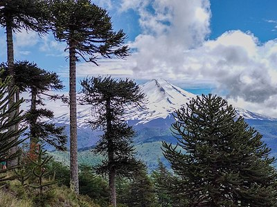 Paisaje de araucarias (A. araucana,
"pehuén") en los Andes chilenos. De O.gomez01 - Own
work, CC BY-SA 4.0, https://commons.wikimedia.org
|
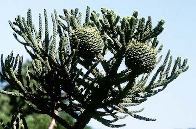 Ramas y conos femeninos de A.
cunninghamii, una de las especies cultivadas como
ornamental.
|
||||||||
| Fam. Pinaceae |
||||||||||||||
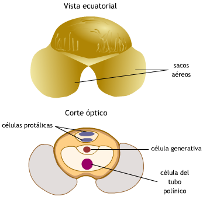 Grano de polen de Pinus sp.
|
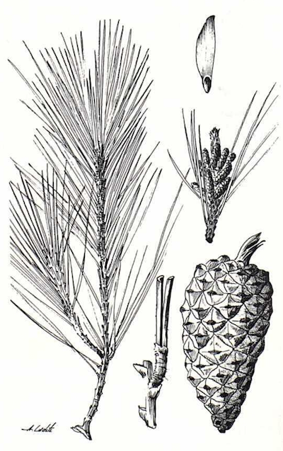 Lámina de Pinus halepensis (pino
carrasco).
Original de Antonio Cadete, en FVAOC (3).
|
|||||||||||||
|
||||||||||||||
| Diversidad de las
pináceas |
|||||||
|
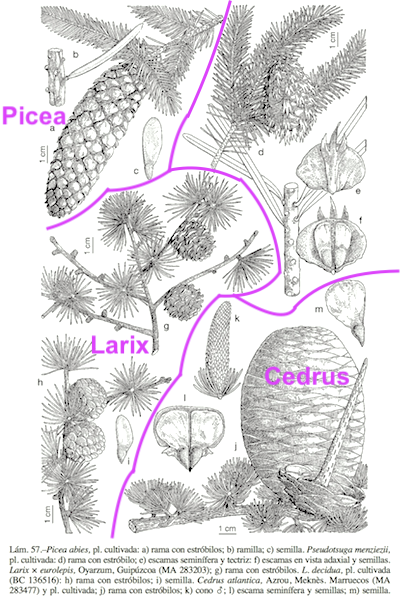 Lámina de Flora iberica: Picea
abies, Larix spp.
y Cedrus atlantica |
|
||||||
|
|||||||
|
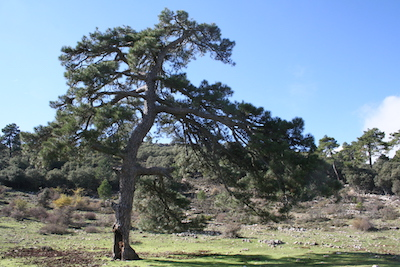 Pinus nigra subsp. salzmannii en el Calar del río Mundo (Srra. de Segura, Albacete). C.R.Z. |
||||||
|
|||||||
| Fam. Cupresaceae |
||||||||
|
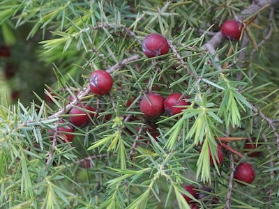 Juniperus oxycedrus (enebro de la
miera), Huesca.
Foto: Manolo Sorinas (Facebook)
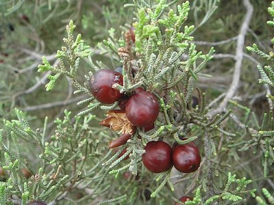 Juniperus phoenicia (sabina negral),
Chiclana.
De Xemenendura - Trabajo propio, CC BY-SA 4.0, https://commons.wikimedia.org |
|
|||||||
|
||||||||
| Diversidad de las
cupresáceas |
|||||||
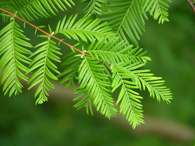 |
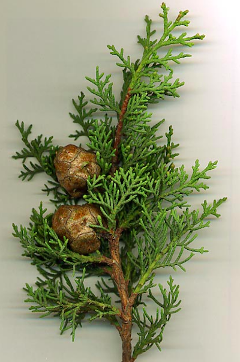 Rama con piñas femeninas leñosas de
Cupressus sempervirens (ciprés común). CC BY-SA 3.0, https://commons.wikimedia.org
|
||||||
|
A la izda., follaje de Metasequoia.
De c)2006 Derek Ramsey (Ram-Man) -
Fotografía propia, CC BY-SA 2.5,
https://commons.wikimedia.org
|
|||||||
| Otras familias del
orden Pinales |
||||||||
|
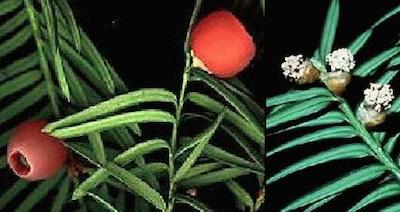 Semillas y pequeñas piñas masculinas de tejo
|
|||||||
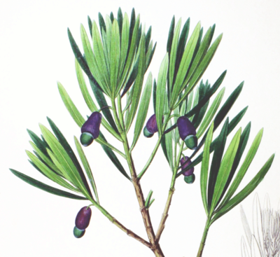 Lámina de Podocarpus macrophyllus. De Philipp Franz von Siebold and Joseph Gerhard Zuccarini - Flora Japonica, Sectio Prima (Tafelband). Dominio público, https://commons.wikimedia.org |
|
|||||||
| Resumen |
|